🦉 So spielst du
Die Eule zeigt dir, wie es geht.
1. Wer bist du?
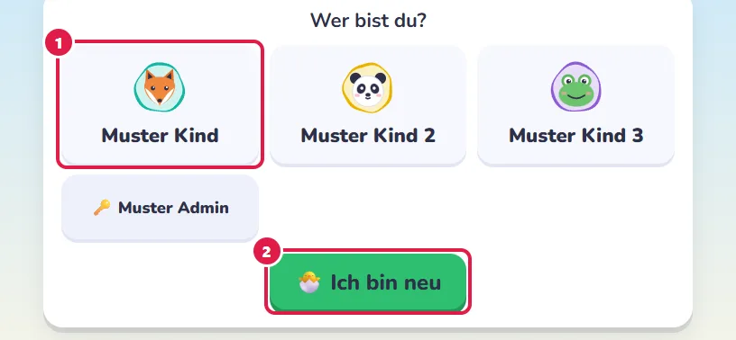
- Tippe auf deinen Namen.
- Bist du neu? Tippe auf 🐣 Ich bin neu und dann auf 🧒 Ich bin ein Kind. Schreib deinen Vornamen und tippe auf deine Klasse.
Ist ein anderes Kind dran? Tippe oben rechts auf deinen Namen.
Unter 👤 Profil suchst du dir dein Bild aus.
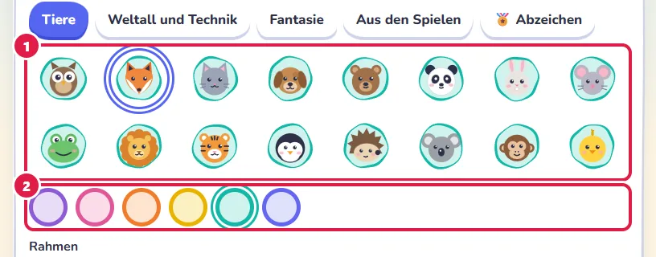
- Ein Tier, eine Rakete, einen Drachen …
- Dazu eine Farbe. Weiter unten wählst du einen Rahmen und eine Form.
🔒 heisst: Das Bild oder der Rahmen kommt mit einem Abzeichen (siehe 9).
2. Such dir ein Spiel aus
Tippe auf ein Spiel.
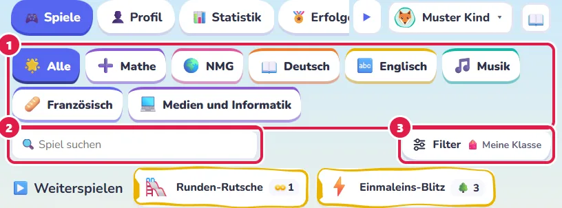
- Hier wählst du das Fach: ➕ Mathe, 📖 Deutsch, 🌍 NMG …
- Mit der Lupe 🔍 findest du ein Spiel schneller.
- Unter Filter → Klasse steht 🎒 Meine Klasse.
Schaltest du 🎒 Meine Klasse aus, siehst du alle Spiele.
Dann steht oben links auf jeder Karte ein Zeichen,
und der Rand hat seine Farbe:
✓ leichter · ● deine Klasse · ▲ Herausforderung
Über den Karten steht das noch einmal.
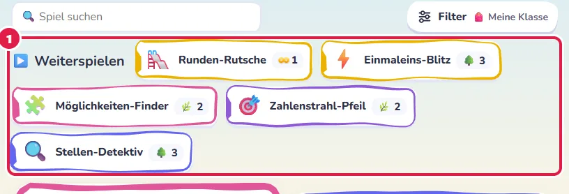
- ▶️ Weiterspielen zeigt die Spiele, die du zuletzt gespielt hast.
☆ Tipp auf den Stern einer Karte.
Dann steht das Spiel ganz oben bei ⭐ Favoriten.
ⓘ sagt dir, worum es im Spiel geht.
Weisst du nicht, was? 🎯 Überrasch mich: Die Eule sucht eins für dich aus.
🎲 Zufallsmix: Aufgaben aus vielen Spielen.
Bei beiden geht auch ♾ Endlos: so viele wie möglich ohne Fehler.
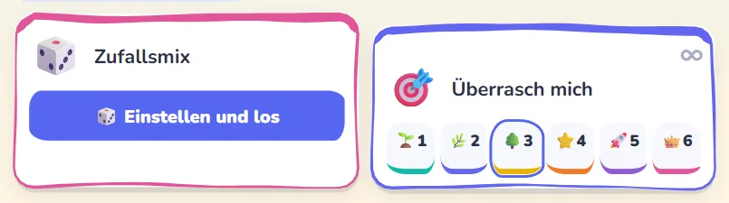
3. Wähle eine Stufe
🌱 ist leicht. 🌳 ist das Ziel deiner Klasse.
👑 ist der Endgegner!
👍 heisst: Diese Stufe passt zu dir.
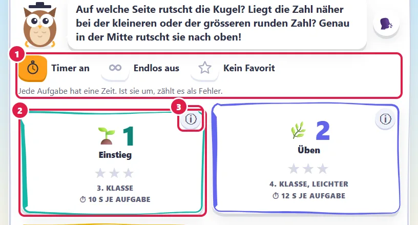
- Hier schaltest du ⏱ Timer und ♾ Endlos ein oder aus. Siehst du ein 🔒? Dann hat das deine Aufsicht so eingestellt.
- Tippe auf eine Stufe, dann geht es los.
- ⓘ sagt dir, was die Stufe übt.
4. Löse die Aufgabe
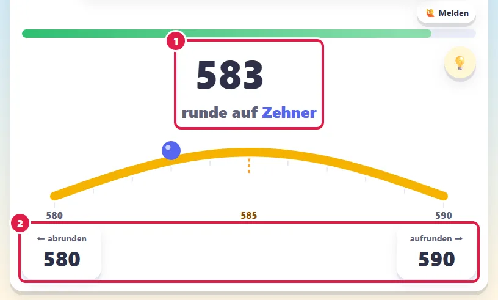
- Schau genau: Das ist die Aufgabe.
- Tippe auf deine Antwort.
⌨️ Am Computer geht es auch mit der Tastatur:
Die kleine Taste oben am Knopf zeigt, welche.
5. Knöpfe, die dir helfen

- ❓ So geht das Spiel.
- 🗣️ Die Eule liest dir vor.
Drückst du lange darauf, liest sie immer gleich vor. - 🙋 Stimmt etwas nicht? Melde es!
- 💡 Ein Tipp für diese Aufgabe.
☀️/🌙 Darfst du es? Dann machst du damit die Seite hell oder dunkel.
6. Rechne auf dem Notizblock

- 📝 öffnet den Notizblock.
Wähle + − × : und tippe deine Zahlen ein.
Dann rechnest du darunter wie im Heft. - Hier hängt die nächste Rechnung an.
Dein Ergebnis steht dann schon oben. - Fertig? Unten bei Weiterrechnen wählst du, wie es weitergeht.
Tipp auf + oder −, dann wechselt das Zeichen.
So geht Plus und Minus in einer Rechnung.
✏️ Kleine Felder in der Aufgabe sind auch Notizen.
Schreib dort hin, was du dir merken willst.
Notizen werden nicht bewertet.
Deine Antwort gibst du wie immer im Spiel ein.
7. Die Eule hilft dir
Falsch? Das ist nicht schlimm!
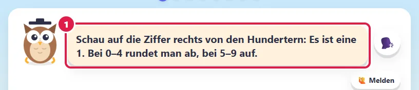
- Die Eule gibt dir einen Tipp. Probier es nochmals.
8. Sammle Sterne
Am Ende bekommst du Sterne.
Oft gibt es dazu ein kleines Bild, das sich bewegt.
Tipp darauf, dann geht es schneller.
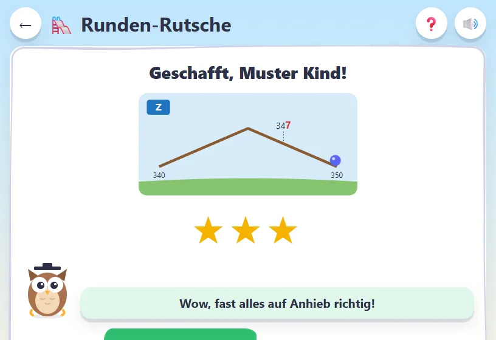
Willst du nochmals? Oder eine andere Stufe?
🔗 Ähnliche Spiele zeigt dir Spiele, die dazu passen.
9. Deine Erfolge
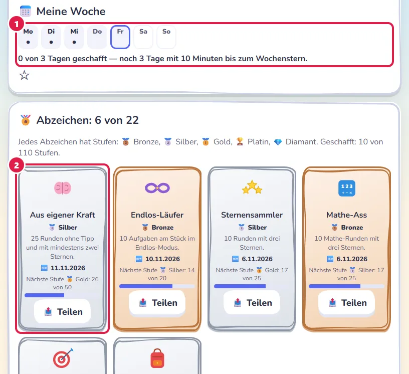
- Schaffst du dein Ziel für die Woche?
Dann bekommst du einen Wochenstern 🌟. - Sammle Abzeichen! 🆕 heisst: neu für dich.
Jedes Abzeichen wird besser: 🥉 → 🥈 → 🥇 → 🏆 → 💎
Ein Abzeichen in 🥇 Gold? Dann kannst du sein Bild als dein Bild nehmen.
Dein erstes 🥇 Gold, 🏆 Platin oder 💎 Diamant schenkt dir einen neuen Rahmen.
Bist du bei Endlos unter den ersten drei?
Dann steht es bei 🏆 Meine Podestplätze.
Mit 📤 Teilen kannst du ein Abzeichen zeigen.
Frag zuerst einen Erwachsenen.
10. Schau, was du kannst
Unter 📊 Statistik zeigt dir die Eule, was du als Nächstes üben kannst.
Tipp auf ▶ Los.
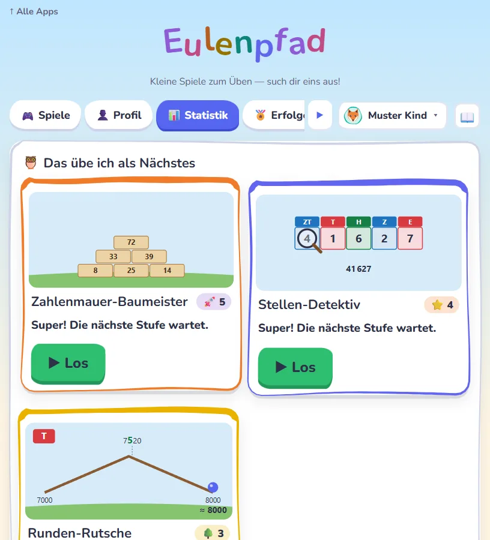
Dazu siehst du deine Woche und deine Runden.
Tipp auf eine Runde: Dann siehst du, was knifflig war.
11. Endlos: Wie viele schaffst du?
Bei vielen Spielen gibt es den Schalter ♾ Endlos:
auf der Karte und oben bei den Stufen.
Schalte ihn ein und tippe auf eine Stufe.
Es geht so lange, bis eine Antwort falsch ist.
Oben siehst du, wie viele du schon hast.
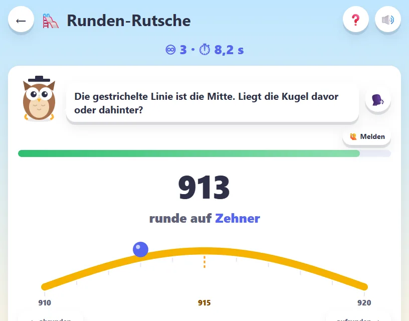
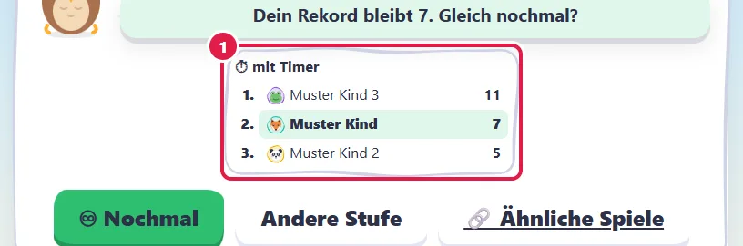
- Am Ende siehst du die Rangliste.
Kannst du deinen Rekord knacken?
Tipps
Lieber jeden Tag ein bisschen als einmal ganz lang.
⏱ Mit dem Timer wird es spannender. Du schaltest ihn mit der Uhr ein und aus — ausser du siehst ein 🔒.
🎧 Steht da „Diese Runde braucht Ton“? Dann ist gerade Ruhezeit.
Mit Kopfhörern tippst du auf 🔊 Ton für diese Runde an.
📖 oben öffnet diese Anleitung.